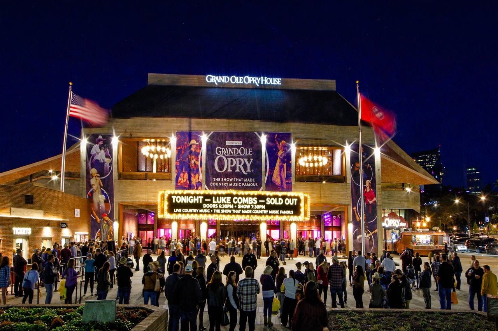

| Grand Ole Opry | |
| Type | Weekly stage concert / radio show |
|---|---|
| Location | Opry House, Nashville, Tennessee, U.S. (since 1974); Ryman Auditorium (1943–1974) |
| Founded | November 28, 1925, as the WSM Barn Dance |
| Founder | George D. Hay |
| Owner | Opry Entertainment Group (Ryman Hospitality Properties) |
| Broadcast | WSM 650 AM; syndicated radio and television |

The Grand Ole Opry is an American weekly live country music stage concert and radio broadcast in Nashville, Tennessee, founded on November 28, 1925, by George D. Hay as the WSM Barn Dance. Owned and operated by the Opry Entertainment Group, it is the longest-running radio broadcast in U.S. history and a central institution in the popularization of country music. The show presents a rotating cast of Opry members and guest artists performing country, bluegrass, Americana, folk, and gospel.
The broadcast began on radio station WSM, owned by the National Life and Accident Insurance Company, whose slogan "We Shield Millions" supplied the call letters. Announcer George D. Hay, a former newspaperman who had launched a barn dance program in Chicago, started the show with 77-year-old fiddler Uncle Jimmy Thompson. In 1927, following an NBC classical music program, Hay joked that after hours of grand opera, listeners would now hear "the Grand Ole Opry" — the name stuck.
As audiences outgrew successive studios, the show moved to the Ryman Auditorium in 1943, a former tabernacle whose wooden pews and acoustics became synonymous with the Opry. In 1974 the show relocated to the purpose-built Grand Ole Opry House at Opryland, east of downtown Nashville; the last Ryman show and first Opry House show bookended a weekend attended by President Richard Nixon, who played piano on stage.
Membership in the Opry is considered one of country music's highest honors, extended by invitation only. Members are expected to perform regularly. Iconic members have included Hank Williams, Patsy Cline, Johnny Cash, Loretta Lynn, Dolly Parton, and Garth Brooks. A circle of oak cut from the Ryman stage is embedded in the Opry House stage floor, symbolizing continuity between the two homes. Hank Williams was famously fired in 1952 for habitual drunkenness, and Cash was temporarily banned in 1965 after smashing stage lights.
The Opry House seats roughly 4,400. Shows are staged primarily on Friday and Saturday nights, with additional Tuesday shows in season. The broadcast remains anchored on WSM 650 AM and is streamed and syndicated; portions have been televised since the 1980s. The Opry returns to the Ryman each winter for "Opry Country Classics" and anniversary shows.